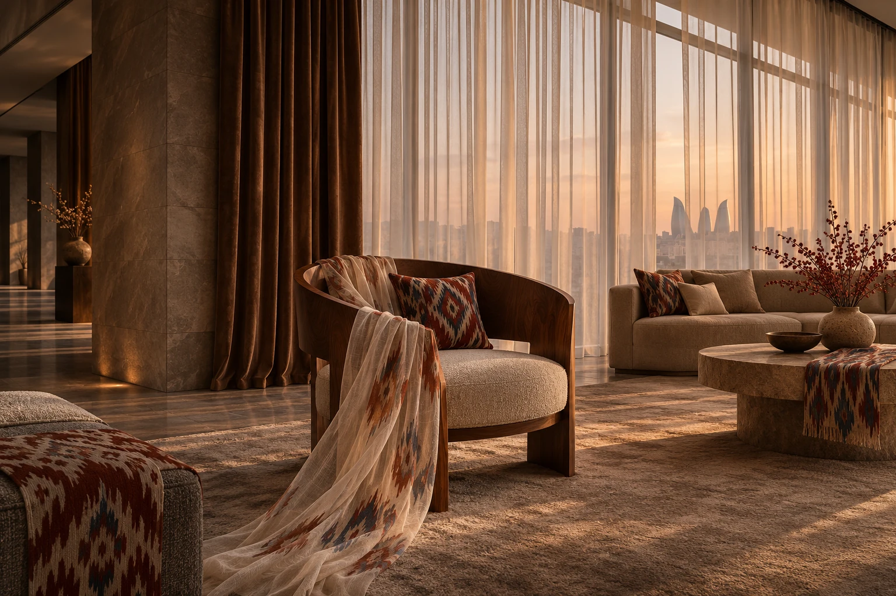
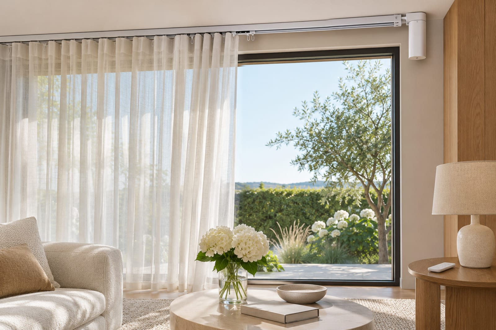

Material

Sarvagelli tekstil konsepti · Bakı, Azərbaycan
Bakı · 1979-dan
Sarvagelli yaşayış, hotel və ictimai məkanlar üçün pərdə, jalüz və interyer tekstili hazırlayır. Material seçimindən ölçü, fərdi tikiliş və quraşdırmaya qədər işi bir komanda ilə görürük.
Sarvagelli haqqında

Marriott Hotel Boulevard
Layihəyə bax
Sarvagelli · 1979-dan
Gün işığının istiqaməti, pəncərənin ölçüsü və məxfilik tələbi pərdə qatını, parçanı və relsin yerini müəyyənləşdirir.
Sarvagelli haqqında
Fərdi tikiliş
Parçanın rəngini və toxumasını yerində yoxlayırıq. Ölçü dəqiqləşəndən sonra pərdəni tikir, relsin və motorun uyğunluğunu yoxlayırıq.
Komandamız
Sea Breeze Grand Hotel
Layihəyə bax

The Ritz-Carlton Hotel
Layihəyə bax
Knightsbridge Residence White City
Layihəyə bax
Port Baku Walk
Layihəyə baxTül, dekorativ və blackout pərdələr işığı və məxfiliyi tənzimləyir. Parçanı və qat formasını pəncərənin ölçüsünə uyğun seçirik.
Ətraflı bax
Bir layihədə material seçimi, fərdi tikiliş və quraşdırma bir-birini tamamlayır. Bu sahələrdən birində təcrübəniz varsa, gördüyünüz işlər barədə bizə yazın.
Karyera səhifəsiMaterial

Atelye

Texniki tətbiq